H는 시차적응이 느린지 매번 매일 이른 아침에 깼다. 이 날도 내가 눈을 뜨기 한참 전에 일어나서 뭘 하고 놀 수 있을지 컨텐츠를 찾고 비교하다가, 내가 눈을 뜨자마자 Comino의 모든 스노클링 투어를 비교해서 제일 나아 보이는 것을 골랐다며 내 앞에 스노클링 투어 상품 페이지를 하나 들이밀었다. 잠이 덜 깬 상태로 영어로 된 페이지를 읽으려니 자세히 보기는 어려웠는데, 요약하자면 오전에 배를 타고 나가서 스노클링하기 좋은 장소 몇 군데를 돌아다니고, 중간에 배에서 식사와 간식과 술도 제공해 주는 6시간짜리 코스였다. 그야말로 지중해에 최적화된 투어 상품이다. 이럴 때 아니면 언제 해 보겠나 싶어서 곧바로 응했다. 남은 날짜가 10/2(월)와 10/6(금) 두 날이어서 10/6 금요일로 신청했다.
오늘의 첫 끼니는 제대로 된 몰타 피자를 먹어 보기로 했다. 구글 리뷰가 괜찮으면서 숙소에서 걸어갈 수 있을 만큼 가까운 곳에 Sally port pizzeria라는 곳이 있어서 이 곳에 가기로 하고, 적당히 채비하여 숙소에서 나왔다.
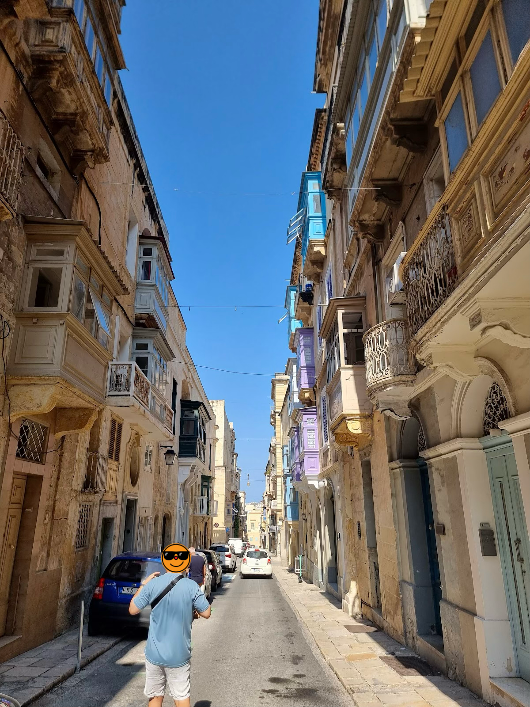
날씨가 어마어마하게 좋았다. 구름 한 점도 없는 하늘이 초점을 맞추기도 어려울 만큼 높고 푸르다. 햇빛이 따갑지만 공기는 건조해서 불쾌하지 않은 정도다. 더위와 추위와 비바람과 습함을 평생 온몸으로 겪어야 하는 한국인이라면 누구나 반할 수밖에 없는 날씨다. 건조기를 쓸 이유가 없는 곳. 창가에 널어 둔 빨래가 한나절이면 냄새 없이 깔끔하게 마르는 이런 곳에서 나고 자라는 사람들은 복 받은 줄 알아야 한다.
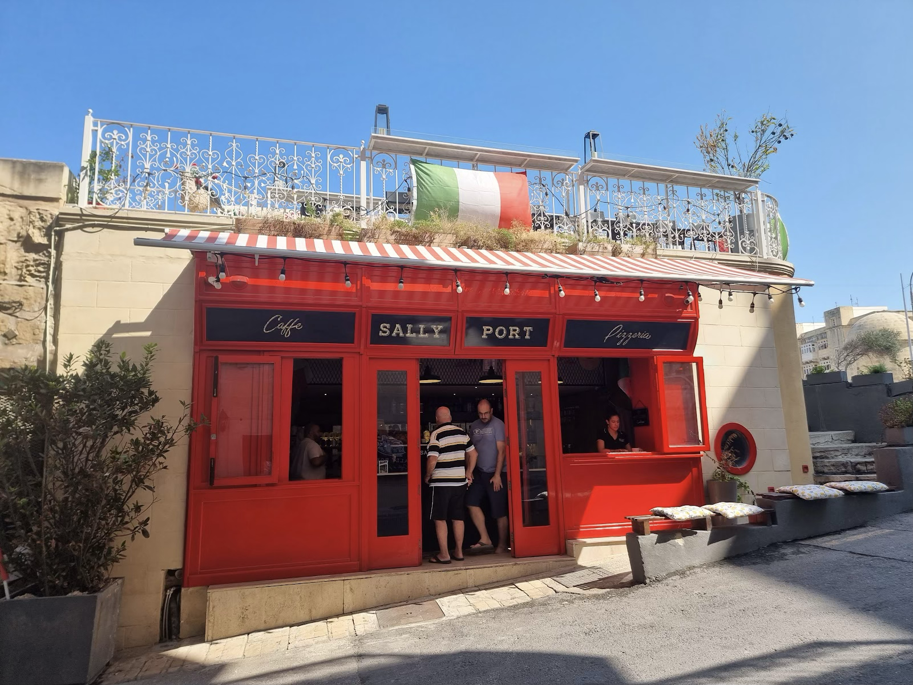
Sally port pizzeria는 이렇게 생겼다. 1층에 실내 좌석이 있고 2층은 야외 테이블이 있는데, 2층에서는 바다가 보였다. 이런 날씨에 바다까지 보이는데 실내에서 벽을 보며 식사를 하는 것은 하늘과 바람에 대한 예의가 아니다. 우리는 냉큼 2층에 자리를 잡았다. 파라솔이 있어서 햇빛도 적당히 가릴 수 있었고, 사람도 별로 없어서 바다가 잘 보이는 좋은 자리에 쉽게 앉을 수 있었다.
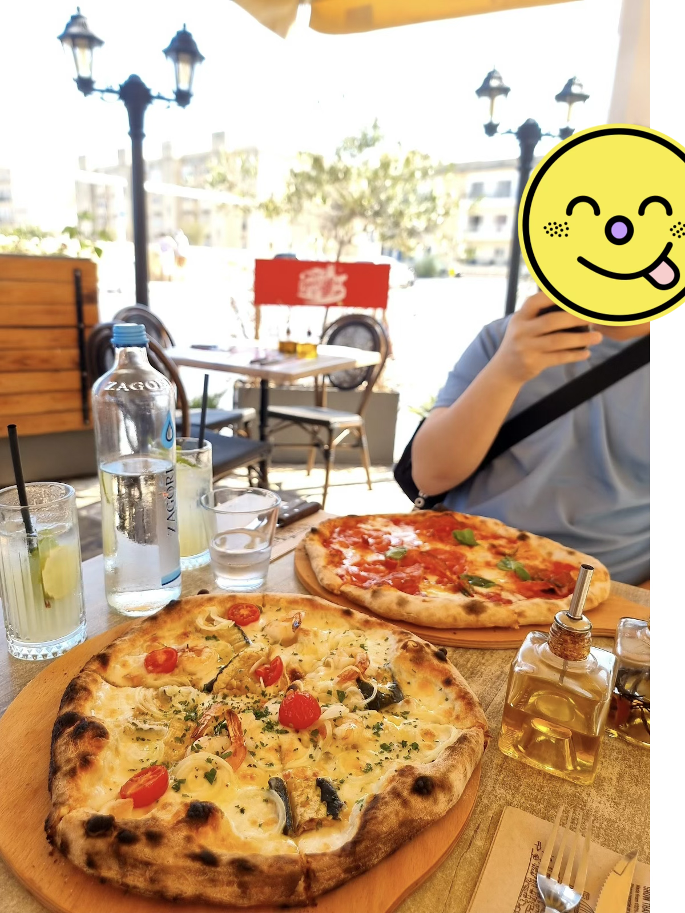
H는 시칠리아, 나는 루시페로라는 이름의 피자를 하나씩 시켰다. 루시페로는 설명란에 매운맛 표시가 있길래 시켜 보았는데, 과연 나온 모습을 보니 토마토 소스에 살라미 소시지와 매운 고추가 올라가 있었다. H의 시칠리아 피자는 치즈 피자에 새우와 가지, 토마토 같은 야채가 이것저것 올라가 있었다. H는 토마토 소스가 들어간 피자를 먹고 싶었다며 내 걸 거의 반 판 정도 먹었다. 시칠리아 피자의 재료 설명에 토마토가 적혀 있기는 했는데, 그게 소스가 아니라 토핑이었다는 데서 실망한 기색이 역력했다. 일어난 지 얼마 안 된 시간이라 술은 먹지 않았고, 음료수만 시켜서 같이 먹었다. 피자 맛은 나쁘지 않았다. 다만 우리가 너무 기대를 한 탓인지, 대전에서 먹었던 맛집 피자가 더 나았던 것도 같았다.
어쨌든 피자는 완판을 하고, H가 여름 원피스를 사고 싶다고 해서 슬리에마로 건너갔다. 발레타는 좋은 곳이지만 몰타의 전통을 보존해 놓은 곳이라 신상 쇼핑센터 같은 현대식 건물은 슬리에마로 가야 많다. 발레타와 슬리에마는 몰타에서 가장 유동인구가 많은 도시들인데, 육로로도 오갈 수는 있지만 너무 비효율적으로 연결되어 있기 때문에 현지인과 관광객을 막론하고 페리를 이용하는 사람이 많았다. 심지어 발레타에서 슬리에마로 직행하는 페리는 왕복 2.8유로로 매우 저렴하다.
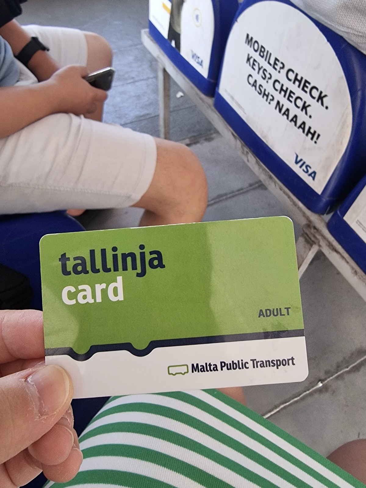
H에게는 예전에 동생이 몰타에 왔을 때 만들어 둔 교통카드가 있었는데, 이게 여전히 유효했기 때문에 별도의 요금 없이 페리에 탑승할 수 있었다. 나만 현금으로 탑승료를 지불하고 배에 올랐다. 섬이 많은 나라에서 배를 주요 교통수단으로 사용하는 것은 어쩔 수 없는 듯하다. 옛날에 베네치아에서 무라노나 부라노 섬으로 이동할 때 배를 탔던 기억이 났다.
슬리에마 페리 항구에서 바닷가 쪽으로 조금만 가면 Tigne point center라는 종합 쇼핑센터가 있다. H가 원피스를 사고 싶어했던 브랜드는 Mango였는데, Tigne point center 안에 있는 The point라는 쇼핑몰에 망고가 입점해 있다고 해서 이쪽으로 온 김에 The point 쇼핑몰 전체를 한 번 둘러보았다. 규모가 아주 크지는 않아서 금방 다 돌아볼 수 있었는데, 아쉽게도 여름 옷들은 대부분 다 들어가고 가을, 겨울 옷들이 잔뜩 전시되어 있었다. 그래도 여기까지 왔는데 한 장은 건지기 위해 열심히 뒤진 끝에 뒤가 트여 있는 검은 원피스 한 장을 샀다. 사실 H가 원했던 것은 민소매 원피스였지만 정말 찾기가 어려웠고, 그나마 남아 있는 것들은 디자인이 좀 촌스럽고 나이 들어 보여서… 어쩔 수 없이 원피스 디자인을 상당히 많이 타협하고 나서야 옷을 살 수 있었다. 그 와중에 햇빛을 가릴 수 있는 챙 넓은 밀짚모자도 사려 했으나 그마저도 파는 곳이 없어서 실패했다.
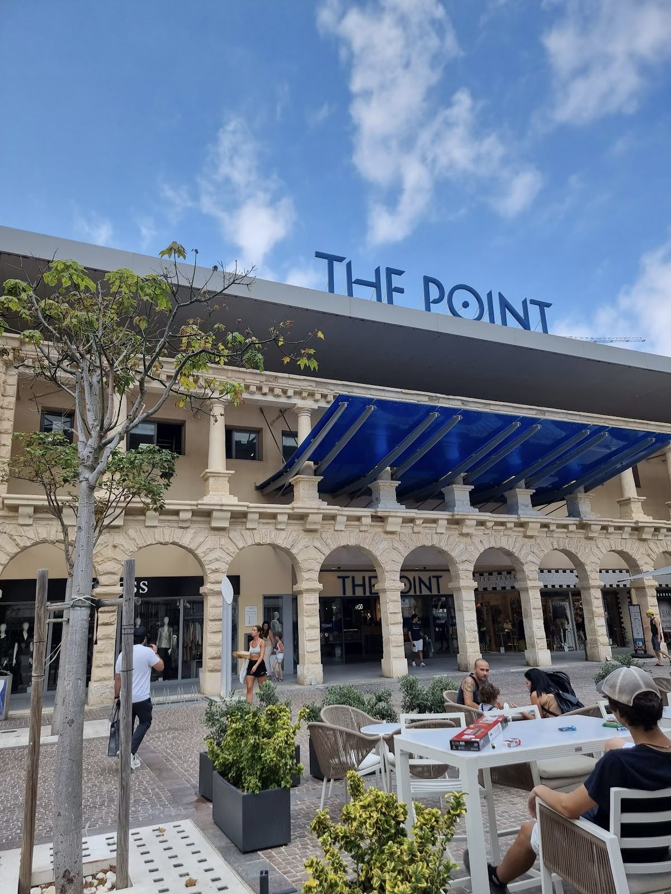
옷을 사고 슬리에마 항구로 돌아오는 길에 갈증이 났고, 날도 좋으니 상큼한 오렌지 주스 한 잔이 마시고 싶어서 항구 바로 앞의 푸드트럭을 찾아갔다. 그런데 물만 있고 오렌지 주스가 없었다. 몰타에 와서 오렌지 주스를 여러 번 찾았는데 이 날까지 한 번을 못 마셨다. 흔한 건데 왜 아무도 안 파는 거야… 그냥 물만 사서 마셔야 했다. 바로 옆 트럭에서는 밀짚모자를 줄줄이 늘어놓고 팔고 있길래 H는 잽싸게 한 개를 10유로에 샀다. 발레타행 페리가 올 때까지 시간이 좀 남아서, 혹시 H가 원했던 디자인의 원피스를 살 수 있을지 기대하며 옆에 있는 ZARA 매장에 들어갔다. 매장 규모가 좀 커 보여서 기대를 했지만, 결과는 꽝이었다. 그냥 시간 때문 셈 치고 돌아가는 페리를 탔다. 사람이 여전히 많았다.
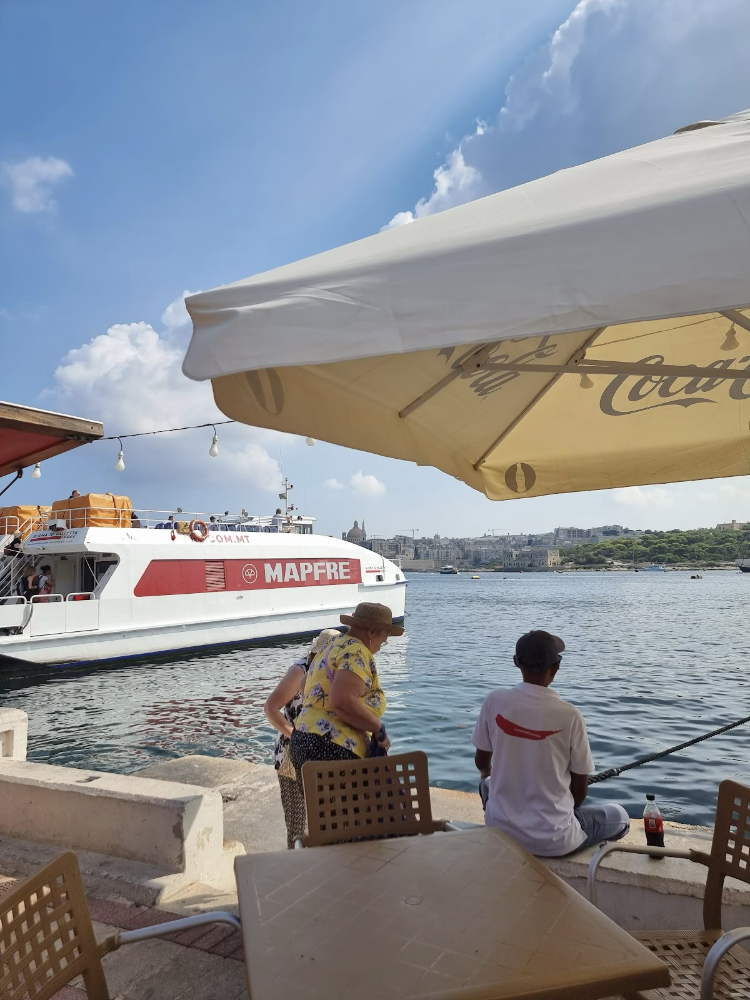
쇼핑도 했으니 발레타에 돌아와서는 커피나 한 잔 할까도 싶었는데, 밖에서 계속 걸었더니 너무 덥고 건조해서 커피 생각이 도저히 안 났다. 발레타 중심가에서 카페를 보긴 했지만, 결국 몸이 이끄는 대로 카페 바로 앞에 있는 Luciano 일 층의 펍에 가서 H가 마실 Shandy 맥주와 내가 마실 오렌지 주스를 시켰다. 그런데 이번에도 오렌지가 동이 나서 오렌지 주스가 없었다. 이쯤 되니 못 마실 팔자려니 싶어서 허탈하지도 않았다. 조금 슬프긴 했지만 괜찮았다. 콜라도 시원하니까.
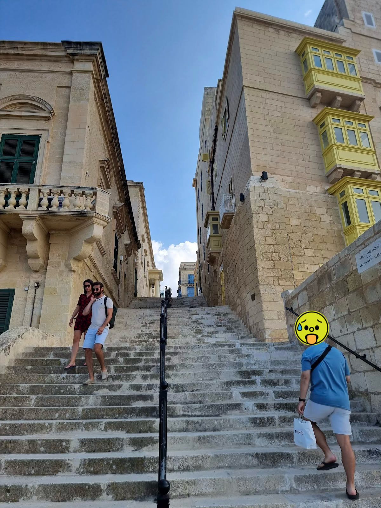
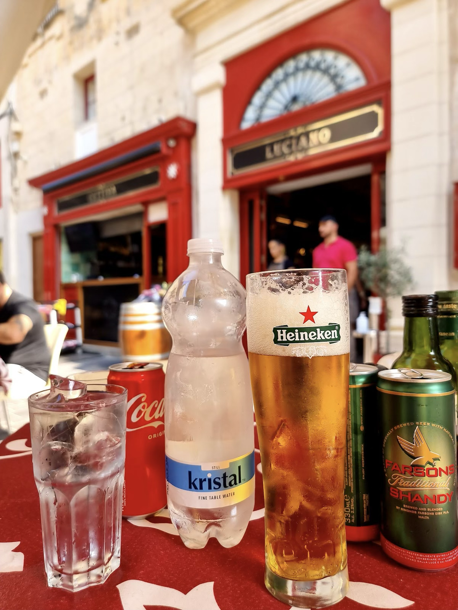
그래도 커피를 아예 안 마시기엔 아쉬운 마음이 들어서 숙소로 돌아오는 길에 costa라는 카페에서 커피를 테이크아웃했다. 아이스 아메리카노와 라떼를 한 잔씩 샀는데, 라떼가 생각보다 훨씬 고소하고 맛있었다.
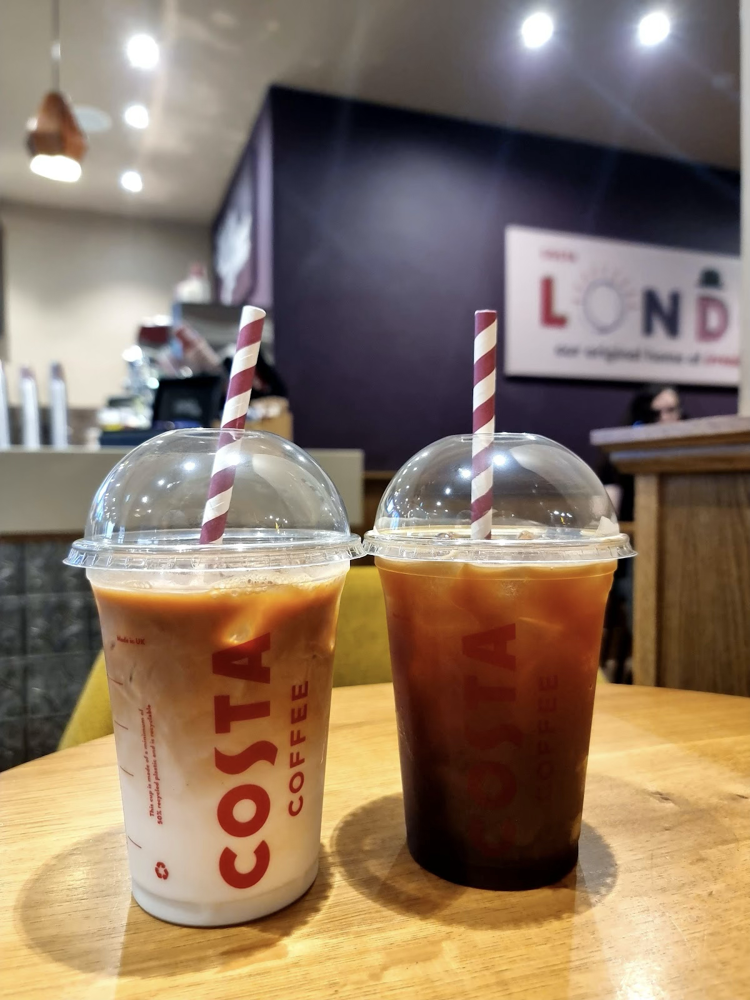
밖에 돌아다니는 동안 땀이 많이 나서, 숙소로 돌아와서는 일단 샤워부터 했다. H는 내친김에 목욕까지 하면서 저녁 먹을 곳과 2차로 갈 곳을 찾고, 내일 저녁에 먹을 스테이크 집까지 찾아서 예약을 했다. 그러고도 시간이 남아서 조금 잘까 했지만, 결국 뒤척이기만 하다가 저녁 먹으러 숙소를 나섰다.
저녁을 먹기로 한 곳은 Il Ristorantino Italiano라는 곳이었다. 발레타 게이트 쪽에 있어서 숙소에서는 꽤 걸어가야 했는데, 평이 어마어마하게 좋아서 상당히 높은 기대치를 갖고 길을 나섰다. 숙소에서 레스토랑으로 가는 길이 직선으로 쭉 뻗은 서남향 길이라서 먼 바다와 노을이 정면으로 보였는데, 그 모습이 대단히 아름다웠다. 사진을 찍어 보려 했으나 빛이 너무 강해서 우리의 장비로는 영 좋은 사진이 나오지 않았다.
레스토랑에 도착해 보니 실내에는 남은 자리가 없어 보였고 야외 테이블만 하나 남아 있었다. 얼른 자리를 잡고 주문을 넣었는데 우리 바로 뒤에 온 손님부터 자리가 없다고 돌려보내졌다. 여러모로 운이 좋았다. 종업원은 이탈리아 분 같았는데 영어를 잘 못하셨다. 듣는 것은 어찌어찌 되는 것 같았는데 말은 정말 알아들을 수가 없어서, 눈빛과 바디랭귀지를 다 동원해서야 겨우 소통해서 주문을 넣을 수 있었다. 직원 추천 메뉴였던 500g짜리 문어 통구이를 시작으로 부르스케타, 랍스터 파스타, 해물 파스타, 나폴리 화이트 와인까지 주문했다. 그 때에는 별 생각이 없었던 것 같은데 이렇게 적어 놓고 보니 정말 많이도 먹었구나 싶다. 와인이 가장 먼저 나와서 맛을 보았는데, 어제 마신 몰티즈 와인보다 나폴리 와인이 우리 둘 입맛에 더 잘 맞았다.
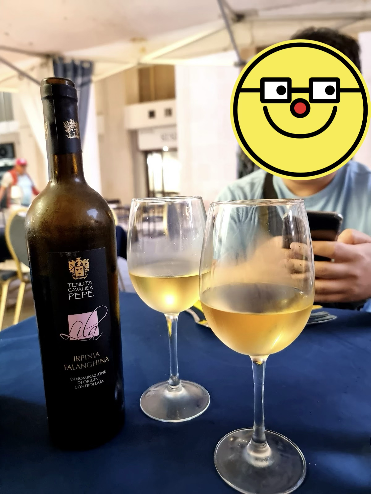
와인이 나온 뒤로는 부르스케타를 시작으로 식사가 줄줄이 나왔는데, 하나같이 아주 맛있었다. 특히 직원 추천 메뉴로 시킨 문어 통구이가 별미였다. 500g이라길래 양이 너무 많지 않을까 걱정했는데 생각만큼 크지는 않았다. 어떻게 찐 건지 속이 촉촉하고, 오징어나 문어를 먹을 때 느껴지는 특유의 질긴 탄력이 없고 그냥 고기처럼 씹혔다. 정말 맛있었다. 인정. 여기 가면 문어 통구이를 꼭 드시길. 그 와중에 H가 나이프로 문어 대가리를 써는데, 육즙이 뿜어져 나와서 오늘 처음 산 원피스 앞섶에 직격했다. H는 분노했지만 탓할 사람은 없었다. 내가 썰지 않아서 어찌나 다행이던지.
문어 통구이에 이어서 나온 해물 파스타는 내가 먹고 H는 랍스터 파스타를 먹었다. 나는 랍스터를 먹어 본 적이 없어서 그냥 덩치 큰 새우일 거라고 짐작했는데, 먹어 보니 맛이 달랐다. 약간 킹크랩 같기도 한데 또 다르고… 랍스터 반 마리와 집게발 하나가 들어 있었는데, 살이 상당히 실했다. 소스도 맛있었다. H의 말에 의하면 한국에서 킹크랩 발라먹듯이 손에 들고 쭈압쭈압 입으로 발골하고 싶었는데, 주변을 보니 아무도 입에 들어갔던 걸 다시 내보내는 것 같지 않아서 눈치가 보였다고 한다. 결국 H는 그냥 도구를 사용해서 살을 발라 먹었다. 영 효율이 별로라고 생각했지만 무례한 사람 취급 받고 싶지는 않았다고 한다.
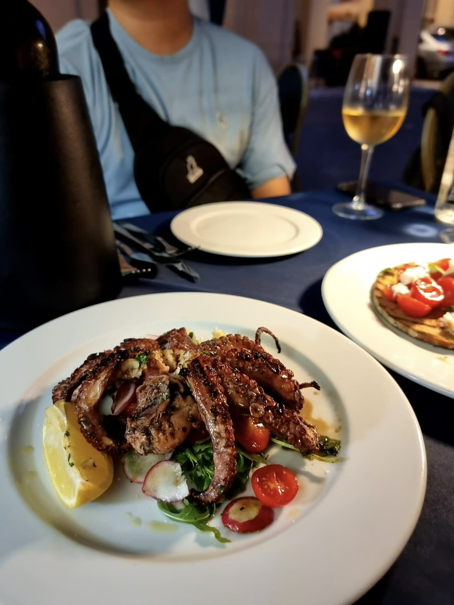
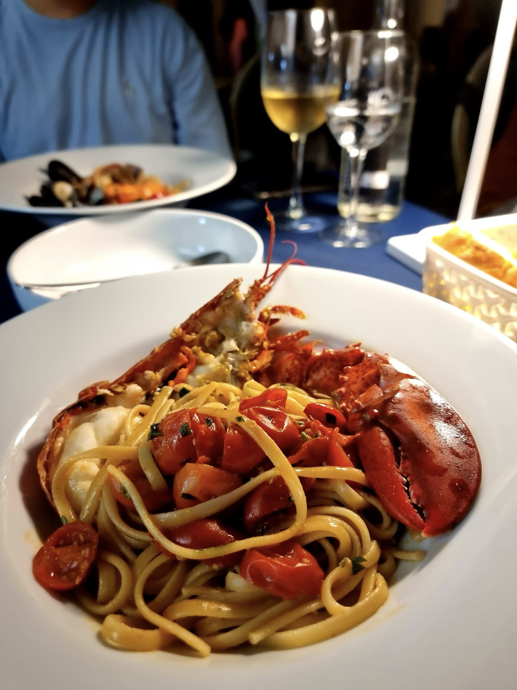
이러저러하다 보니 식사만 거의 두 시간 가까이 했다. 다른 야외 테이블에 앉아 있는 사람들은 대화를 들어 보니 프랑스, 독일, 영국 사람들이었는데, 그들도 식사 후에 와인을 마시거나 담배를 태우면서 한참 동안 이야기만 하다 일어났다. 이야기와 함께 오래 먹는 게 유럽 스타일의 식사인지도 모르겠다. 시간이 오래 걸린 만큼 이번에도 어김없는 과식을 했다. 이 한 끼에 식비로 110유로. 15만원 이상을 태웠다.
숙소로 돌아와서 빨래 건조기를 한 번 더 돌리고, 2차로 술을 마시러 나갔다. 2차 예약을 해 둔 술집은 DOPO라는 곳이었는데, H는 꾸준히 포도라고 불렀다. 분명 구글로 예약을 하고 갔는데, 막상 직원에게 이야기했더니 예약이 들어온 게 없다고 했다. 이럴 거면 구글 예약을 왜 열어놓았는지…그나마 자리가 많이 있어서 다행이었다. 가게 앞에는 기타를 든 버스커가 루프스테이션을 써 가며 화려하게 라이브 무대를 선보이고 있었다. 노래는 우리 세대보다 약간 앞선 올드 팝이었는데 노래도 잘 하시고 이 날 분위기와 잘 어울려서 손님들도 박수를 보내 가며 즐겁게 들었다. 샘 스미스를 닮은 직원도 쟁반을 손에 들고 춤을 추면서 돌아다녔다. 우리는 칵테일을 한 잔씩 시켰는데, H는 Porn star라는 칵테일을, 나는 Fat boy slim이라는 칵테일을 시켰다. 아쉽게도 slim해지는 느낌은 없더라.
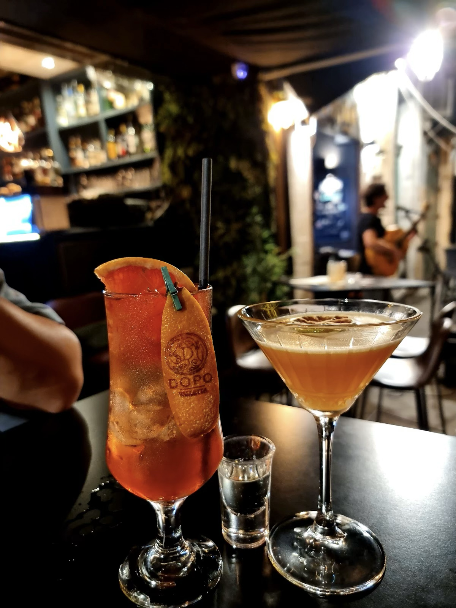
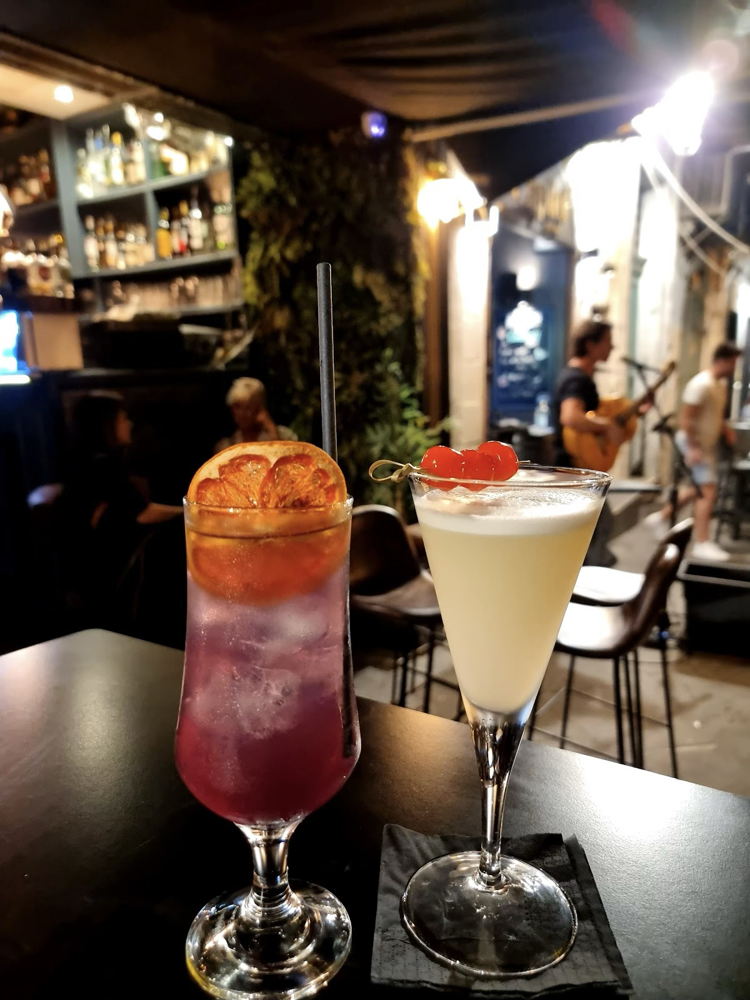
우리 바로 뒤 테이블에는 한 서양인 커플이 앉아 있었는데, 잘 놀다가 각자 누군가와 통화를 시작하더니 여자가 불같이 화를 내기 시작했다. 수화기에 대고 소리를 고래고래 지르는데 ‘낸시’라는 여자에게 단단히 화가 난 것 같았다. 공연하시는 분이 “저는 마이크 대고 있는데도 마이크 없는 저 분한테 밀리네요” 하며 분위기를 풀어 보려고 했지만 그 분은 아랑곳하지 않았다. H의 바로 뒷자리라 소리가 똑똑히 들렸는데 성량이 대단하긴 했다. 남자도 표정이 점점 안 좋아지더니 결국 여자를 데리고 자리를 떴다. 무슨 일이 있었는지는 모르겠지만 원만한 해결이 되었길 바란다. 낸시라는 분은 누군지 모르지만 얼른 사과하는 게 좋았을 것이다.
다른 곳으로 3차를 갈까 했지만 칵테일이 맛있기도 했고, 무대도 좋아서 그냥 한 잔씩 더 시켰다. H는 Devil’s Ice tea라는 것을 시켰는데, 오랜만에 칵테일 잔에 불을 얹어 주는 걸 봤다. 맛은 달달하고 알코올이 거의 안 느껴지는, 전형적인 레이디 킬러의 맛이었다. 그렇게 네 잔을 마시고 계산을 하는데 총액이 46유로였다. 한국에서 우리가 가던 단골 칵테일 바보다 저렴했다. 몰타는 확실히 놀기 좋은 곳이다.
숙소로 돌아가는 길에 일부러 골목 이곳저곳을 좀 걸으면서 둘러봤는데, babel 어쩌고 하는 이름의 술집이 골목을 아예 야외 테이블로 막아버리고 쿵짝거리는 음악을 엄청 크게 틀고 있었다. 골목 바로 옆이 광장이었는데 이 술집에서 나오는 음악 소리가 광장 전체를 들었다 놨다 했다. 술 마시는 사람뿐 아니라 우리처럼 지나가다가 구경하는 사람도 엄청 많았다. 한가운데 있는 소파에는 커플로 보이는 남자 두 명이 껴안고 애틋한 표정으로 무대를 바라보고 있었다. 이런 면에서 보면 정말 앞서나가는 유럽이다.
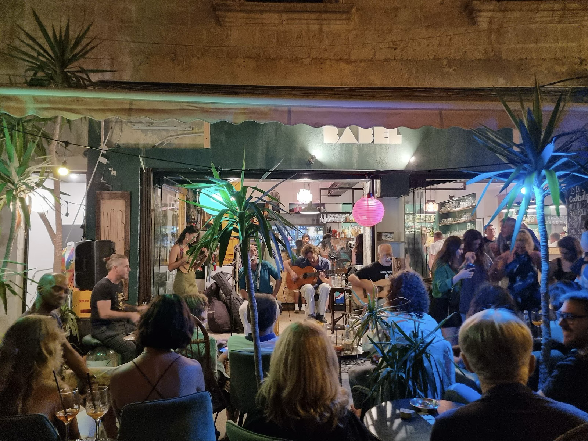
우리 숙소 옆의 골목은 오늘은 조용했다. 어제까지만 해도 쿵짝거렸는데, 토요일이 피크인지도 모르겠다. 그렇게 산책을 하다가 자정쯤 되어서 숙소로 돌아왔다. 씻고 자리에 누우니 한 시쯤 되어 있었다.